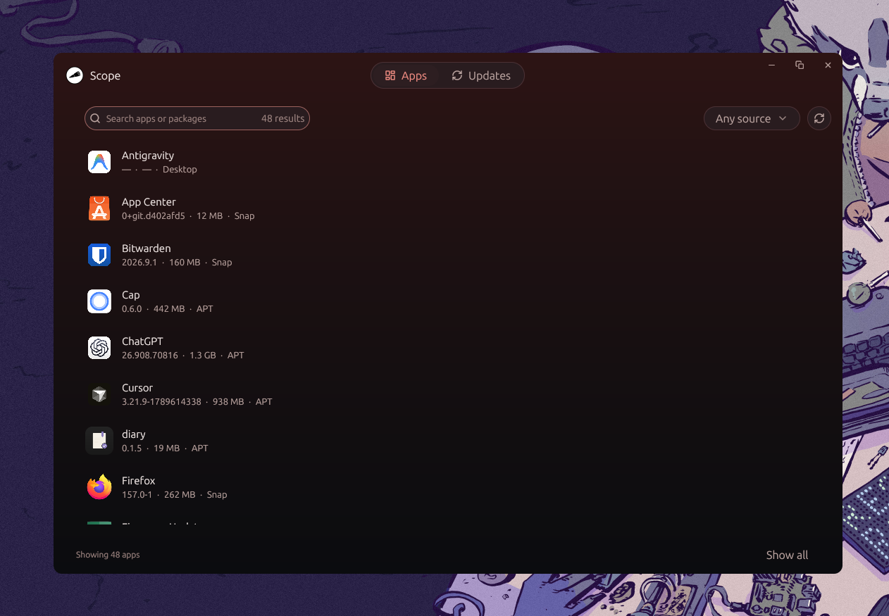

Every app on your Linux machine, in one list.
Scope brings APT, Snap, Flatpak, AppImage, and locally installed Steam games into one searchable list. Update or uninstall supported package-manager apps, and read the exact command before it runs.
Version 0.3.4 for Ubuntu on x86-64. Free under the MIT License.

Package systems and Steam, one list
Each package-manager source keeps its own commands. Steam is read-only in Scope: known pending updates come from the last local scan, while Open in Steam hands management back to Steam. Scope never edits package databases directly.
APT
Packages you installed by hand. Dependencies stay out of the list.
apt remove -y and apt install -ySnap
Apps and tools from the Snap Store. Runtimes and bases are hidden.
snap remove and snap refreshFlatpak
User and system installs. Each one keeps its own scope, so nothing is guessed.
flatpak uninstall -y --userAppImage
AppImages in common folders. Listed for now. Uninstall and update are not supported yet.
listed onlySteam
Locally installed games from native and Flatpak Steam libraries. Known pending updates appear in Updates; their recorded state can be pending, paused, or in progress. Rescan for a fresh local reading, then Open in Steam to manage it.
Open in SteamSteam does not use an online check: an unknown status has no usable recorded state, and No update recorded does not confirm that a game is up to date. Desktop launchers that no package manager owns also appear for discovery only, with actions disabled. Steam tools and entries with an unknown type appear with Show all.
Every change goes through a plan
Scope never runs a package-manager update or uninstall the moment you click. Four steps stand between your click and the command, and the last two catch anything that changed since you reviewed the plan.
-
Plan
Scope lists the exact commands for the app you picked, such as
apt remove -y cap. Nothing runs yet. -
Confirm
You read the plan and choose Run plan, or cancel. A plan works once and expires after five minutes.
-
Revalidate
Scope checks that the package is still installed, that an update's version has not moved, and that the deny-list still allows it. If it cannot confirm these, it stops.
-
Run
The command runs through the standard Polkit dialog, and the log streams into the footer. One package operation runs at a time.
What Scope is
Scope is a free, open-source Linux app manager. It shows the apps installed through APT, Snap, Flatpak, and AppImage in one searchable list. You can update or uninstall supported apps, and every change begins with a plan that lists the exact commands.
Most people install software from several places at once. An app can come from the Ubuntu archive, the Snap Store, Flathub, or a download folder, and each source has its own tool. Scope reads all four and shows them side by side.
Synaptic manages APT packages only. Software centers such as GNOME Software and KDE Discover show what their own catalogs offer. Scope starts from what is already on your machine. It is written in Rust with Zed's GPUI toolkit, with no webview.
- Platform
- Linux, Ubuntu first, x86-64
- Actions
- Uninstall and update for APT, Snap, and Flatpak
- Admin rights
- Standard Polkit dialog through pkexec. Scope never sees your password.
- Version
- 0.3.4
- License
- MIT
- Source
- github.com/khurrambhutto/scope
What works today
Scope is early. This list matches the current release.
Working
- One list across APT, Snap, Flatpak, AppImage, unmanaged desktop launchers, and locally discovered Steam games
- Display names, categories, and icons from desktop entries and the icon theme
- Uninstall with a preview, Polkit authentication, and a deny-list
- Update with a preview for APT, Snap, and Flatpak; known pending Steam updates in Updates
- Self-updater that checks a signed SHA-256 manifest for official .deb builds
Not yet
- AppImage uninstall and update
- .rpm release packages
- Snap target version in the update preview
- Whole-system cleanup and disk usage views
- Fedora and Arch package-manager support
Install in one command
Download the .deb from GitHub Releases, then run this from the folder you saved it to. The install guide covers building from source and removing Scope.
Questions
Short answers. The safety page explains the checks in detail.
What is Scope?
Scope is a free, open-source Linux app manager. It lists apps from APT, Snap, Flatpak, AppImage, and locally installed Steam games in one searchable list. Supported package-manager apps can be updated or uninstalled from one place; known pending Steam updates appear in Updates, while Steam games open in Steam for management.
Which Linux apps can Scope manage?
Scope shows APT manual installs, Snap apps, Flatpak apps (user and system scope), AppImages, desktop launchers that no package manager owns, and locally installed Steam games. Update and uninstall work for APT, Snap, and Flatpak. AppImages and desktop launchers are discovery-only; Steam is read-only, but known pending updates and recorded paused or in-progress status appear after a rescan. Open in Steam hands management back to Steam.
Does Scope ask for my password?
No. Commands that need root use the standard Polkit dialog through pkexec. Scope never sees or stores your password.
Can Scope remove critical system packages by accident?
No. A backend deny-list protects critical APT packages, kernel images, Snap runtimes, and related system libraries. The check runs when you build a plan and again before it runs. Protected rows have a disabled uninstall action.
Which Linux distributions does Scope support?
Ubuntu is the primary target, with a .deb package for x86-64. Other Debian-based systems can build from source with Rust. .rpm packages, and Fedora and Arch package-manager support, are not available yet.
Is Scope free and open source?
Yes. Scope is released under the MIT License, and the source is on GitHub.